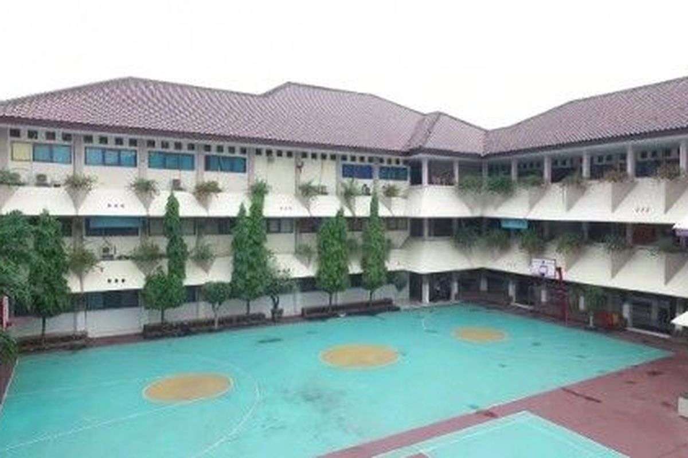

This analysis explores the distribution and characteristics of schools (SD, SMP, SMA — categorized into Negeri and Swasta) in Jakarta, alongside the population size and density of each Kelurahan.
Using interactive maps, datatables, scatter plots, and funnel plots, we examine:
How schools are spatially distributed and categorized across Kelurahan and Kota.
The relationship between population size and availability of schools.
The balance between Negeri and Swasta schools at the Kelurahan level.
The proportional distribution of school types from primary (SD) to secondary (SMP, SMA) education.
Color coding by Kota (City) and interactive elements allow a deeper understanding of regional variations and potential educational infrastructure gaps across Jakarta.
Map of Schools by Type and Status
Interactive map showing locations of SD/SMP/SMA, colored by type and status (Negeri/Swasta).
Population Density Map
Interactive map coloring Kelurahan by population density (people/km²).
Population vs. Area Scatter Plot
Scatter plot showing how population size relates to area size across Kelurahan, colored by Kota.
Top Kelurahan by Total Schools Table
Sortable, searchable table listing Kelurahan with the most schools (SD, SMP, SMA counts shown).
Negeri vs. Swasta Scatter Plot
Scatter plot comparing number of Negeri vs Swasta schools per Kelurahan, with Kota coloring and a reference line y = x.
Population vs. Total Schools Scatter Plot
Scatter plot showing how population relates to number of schools, colored by Kota.
School Type Count Funnel
Stacked funnel plot showing number of SD, SMP, SMA schools, split by Negeri and Swasta.
School Type Proportion Funnel
Stacked proportional funnel plot showing percentage split of Negeri vs Swasta across SD, SMP, SMA.